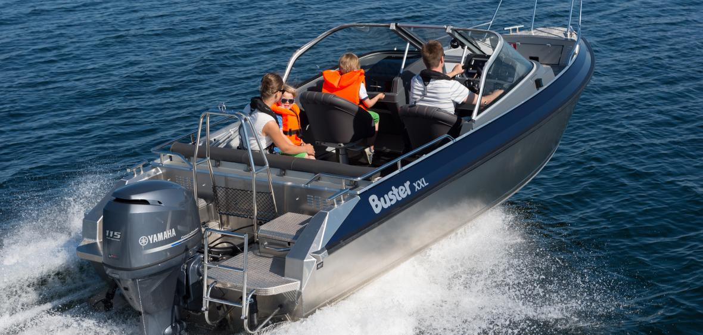
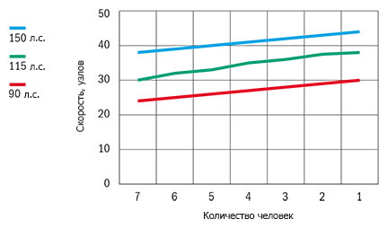

Катер Buster XXL (Бустер XXL)
Buster XXL (Бустер XXL) – просторный и стильный катер для активного отдыха. Buster XXL (Бустер XXL) соответствует названию – ISO (Большой).Однако размер не делает катер неуклюжим – с точностью наоборот. Просторный Buster XXL (Бустер XXL) с ловкостью перевезёт компанию любителей активного отдыха на воде из семи человек со всем необходимым оборудованием. Просторное, легко трансформирующее пространство катера идеально подходит для занятий водными видами спорта, рыбалки, походов выходного дня и других водных увлечений.
Buster XXL (Бустер XXL) – единственная модель семейства Buster, на которой пространство кормового кокпита с помощью сдвигающегося, съёмного кормового дивана легко модифицируется с учётом именно ваших потребностей. Леерные ограждения, крепления и кнехты изготовлены из нержавеющей стали. Buster XXL (Бустер XXL) специально спроектирован для жёсткого использования, это подтверждают и просторные поверхности, удобные для перевозки грузов. Катер отлично подходит для приятного и комфортного совместного отдыха, дополнительно, на корме можно установить стол для прохладительных напитков.
Buster XXL (Бустер XXL) специально спроектирован для наслаждения приятным и комфортным отдыхом. Катер со спортивной динамичной формой корпуса обладает уникальными ходовыми характеристиками. Просторный кокпит обеспечивает удобное передвижение на борту. С опцией ENTERTAINMENT ваше путешествие пройдёт под крылом вашей любимой музыки.
Технические характеристики катера:
| Параметр | Buster XXL |
|
Длина |
6.35 м |
|
Ширина |
2.40 м |
|
Масса (Без двигателя) |
850 кг |
|
Вместимость |
7 человек |
|
Рекоменд. мощность двигателя |
90 - 150 л.с. |
|
Емкость топливного бака |
155 л |
|
Осадка при полной нагрузке |
0,35 м |
|
Максимальная скорость |
43 узла |
|
V-угол дна |
20° |
| График скорости | |
|  | |
Стандартное оборудование:
- Гидравлическое рулевое управление
- Консоль управления, ветровое стекло, закалённое
- Консоль левая, ветровое стекло, закалённое
- Багажные отсеки внутри консолей
- Очиститель ветрового стекла, правая сторона
- Стационарная дверь между консолями
- Закрывающиеся багажные отсеки (система запирания замков одним ключом)
- Встроенный ящик для хранения тента
- Кормовой диван, съёмный
- Мягкие кресла Offshore 2шт. с чехлами
- Ножка для кресла на рессорах
- Якорные боксы на корме, слева и справа
- Задние площадки на корме для спуска в воду
- Забортный трап
- Леерные ограждения, крепления и кнехты (нержавеющая сталь)
- Огнетушитель
- Чехол для аккумулятора
- Центральный выключатель с автоматическими предохранителями
- Автоматическая трюмная помпа
- Стационарный топливный бак
- Навигационные огни
- Мачта, съёмная
- Электрический разъём 12V
- Самоосушающийся кокпит
- Подготовительные работы для установки системы слежения Buster
Дополнительное оборудование:
- Комплект мягких подушек
- Тент на корму, из двух частей
- Тент стояночный
- Штанга для буксировки вейкбордиста
- Подставка для вейкборда на штангу
- Очиститель ветрового стекла, левая сторона
- Сиденье-бокс 45 л.
- Подставка для установки дополнительного мотора
- Подставка для крепления датчика эхолота
- Компас
- Стол
- Система запирания(трос, замки Abloy, система запирания одним ключом)
- Мягкая подушка, сиденье-бокс, 45 л.
- Comfort*
- Canvas*
- NAVI 7*
- Entertainment*
- Perfomance*
*Дополнительные опции устанавливаемые на заводе-изготовителе
NAVI 7: картплоттер Raymarine A70D, компас Silva 70un, подставка для крепления датчика эхолота.
Comfort: комплект мягких подушек на заднее сидение, ножки для сидений на рессорах.
Canvas: тент на корму.
Entertainment: стереосистема Alpine, колонки 2 шт., стол.
Perfomance: штурвал Telflex SeaStar Tilt, транцевые плиты Insta trim.

{kind=link}
{kind=link}
{kind=link}
{kind=link}
{kind=link}
{kind=link}